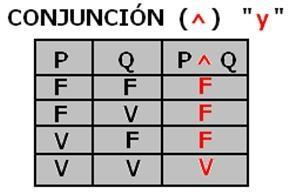
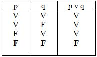
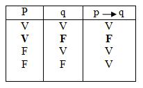

Conectivos Lógicos
La base de la programación y los circuitos digitales.
1. Conjunción (AND)
p ∧ qSolo es Verdadera si ambas son verdaderas.
 Signo en C++: Es el operador
&&.Idea principal
Su solución será otra proposión cuyo valor
verdadero
será solo si el resultado de p y q sonverdaderos
, su valor seráfalso
SI p ó q, ó p y q su valor esfalso
.Ejemplos de conjunción
- Si P es "El cielo está despejado" y Q es "Hace sol", la conjunción P∧Q sería "El cielo está despejado y hace sol". Esta proposición es verdadera solo si ambas condiciones se cumplen.
- En un contexto matemático, si P es "El número es par" y Q es "El número es mayor que 2", la conjunción P∧Q es verdadera solo si el número es par y mayor que 2.
2. Disyunción (OR)
p ∨ qEs Verdadera si al menos una es verdadera.
Signo en C++: Es el operador
||.Idea Principal
Su respuesta es un valor
verdadero
cuando p ó q, ó p y q su valor esverdadero.
.Definición
La disyución es un concepto fudamental en lógia que se utiliza para combinar dos o más proposiciones. Es
verdadera
si al menos una de las proposiones esverdadera
, se lee como P o Q. Esfalsa
solo cuando ambas P y Q sonfalsas
.3. Condicional (Implica)
p → qFalso solo si V → F.
"Si apruebo (V), me compras un coche (F)". ¡Mentira! (F).
⚡ Laboratorio de Verdad ⚡
Prueba los operadores asumiendo p=Verdadero y q=Falso:
esperando input...